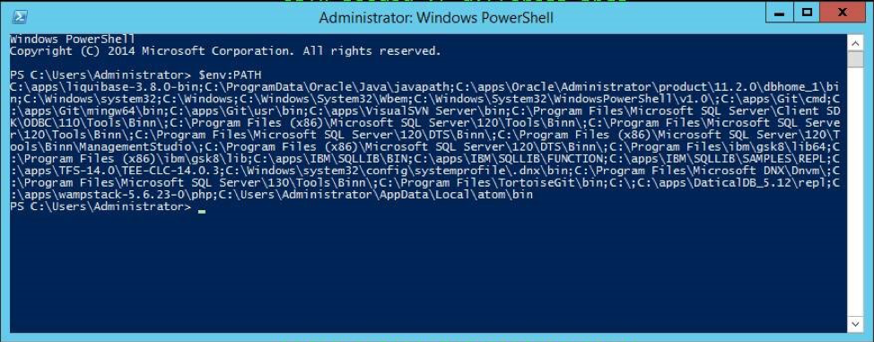

Once you have downloaded the Liquibase-Version#-bin.zip file, right-click the zipped file and select Extract All. You can place the extracted folder anywhere on your local drive. Before configuring , you must set a Path System Variable to the folder on your computer.
To set the Path System Variable:
In your Windows search box, type env and select the Edit the System Environment option in the Control Panel.
In the Advanced tab, select Environment Variables.
In the System Variables section, highlight the Path variable and click Edit.
In the Edit environment variable window, select New, then add the path to the Liquibase-Version#-bin folder.
C:\apps\liquibase-3.8.1-bin
Select Ok on all windows to close them.
Verifying
Verification is an essential aspect of the installation process, and there are three things you need to check:
The folder was correctly added to your Path System Variables.
Java is installed on your system.
The help command can be run in PowerShell.
Verification #1: Check Path System Variables
To verify that you have correctly added the folder to your Path System Variables:
In your Windows search box, type power and select Windows PowerShell.
In the PowerShell window, type $env:PATH.
You should see the following:

Verification #2: Check for Java Installation
For to run correctly, Java must be installed on your Windows machine. To verify that Java is installed on your computer:
In your Windows search box, type cmd to open the Command Prompt.
In the Command Prompt window, type: java.exe -version.
If you see the error: ‘java.exe' is not recognized as an internal or external command, operable program or batch file, go to https://www.java.com/en/download to install Java.
Verification #3: Run the Liquibase Help Command
Another way to verify that you installed correctly on your computer is to run the help command. To run the command:
In your search box, type cmd to open the Command Prompt.
In the Command Prompt window, type liquibase --help.
Common Troubleshooting
If you cannot run the help command, verify that you have correctly installed Java. Also, ensure that the folder you downloaded is set to your Path System Variables.
If you have installed Java, but are still receiving an error, add Java to your Path System Variables using the steps provided in the following section.
How to set the JAVA_HOME environment variable
To set the JAVA_HOME environment variable, follow these steps:
Locate your Java installation directory.
In your Windows search box, type env and select the Edit the System Environment option in the Control Panel.
In the Advanced tab, select Environment Variables.
Under System Variables, select New.
In the Variable Name field, enter either JAVA_HOME if you installed the JDK (Java Development Kit) or JRE_HOME if you installed the JRE (Java Runtime Environment). It should be your JDK or JRE installation path.